SAD – závěrečná zkouška · Modulace a přenos signálu – SAD · https://balnerm.github.io/pripravy/sad/zkouska/20_modulace.html
Přednáška 10
Modulace a přenos signálu
Naměřený biosignál často nezůstává u přístroje: posílá se bezdrátově do telefonu, do monitoru u sestry nebo do sítě. Signál ze senzoru (pomalý, s nízkými frekvencemi) ale nejde přímo vyzářit anténou. Proto se „naloží“ na rychlý nosný signál – a tomu se říká modulace. Kapitola vysvětluje, jak informaci nese amplituda (AM), frekvence (FM) a fáze (PM), co jsou odvozené varianty (tzv. deriváty) jako SSB, PSK a QAM, jak vypadá cesta od vysílače k přijímači a proč „víc bitů najednou“ znamená „citlivější na šum“.
S modulací jsme se už potkali: ve frekvenčním multiplexu (P8) se signály modulací posunuly každý na vlastní nosnou a u galvanického oddělení (P9) se signál převedl na PWM. Tady jde o radiofrekvenční přenos: vysílač (TX) → elektromagnetická vlna → přijímač (RX).
Elektromagnetické pole a spektrum
Bezdrátový přenos mezi vysílačem a přijímačem je realizován elektromagnetickými vlnami. Elektromagnetické vlnění má vlastnosti vlnové (odraz, interference, polarizace) i kvantové. Samotný přenos je realizován časovými a prostorovými změnami elektromagnetického pole (EMF). Detaily patří do fyziky – stačí rozumět principu.
Vlnová délka \(\lambda\) je vzdálenost, kterou vlna urazí za jednu periodu; pro elektromagnetické vlnění je dána podílem rychlosti šíření a frekvence: \[ \lambda = \frac{c}{f}\quad [\text{m}] \]
čím vyšší frekvence, tím kratší vlna. Podle vlnové délky (nebo frekvence) se celé elektromagnetické spektrum dělí na pásma – od dlouhých rádiových vln po záření gama.
| \(\lambda\) | vlnová délka [m] |
| \(c\) | rychlost elektromagnetického vlnění ve vakuu, \(c \approx 3{,}00 \cdot 10^{8}\ \text{m}\,\text{s}^{-1}\) |
| \(f\) | frekvence [Hz] |
Elektromagnetické vlnění se kromě vlnové délky popisuje i energií fotonu \(E = hf\) (\(h\) je Planckova konstanta).
Pro bezdrátový přenos dat se využívá část spektra rádiových vln a mikrovln, pro optický přenos část spektra infračerveného (IR) a viditelného záření – obecně tedy neionizující část spektra. Přehled pásem ze slidu (zkráceně):
| pásmo | frekvence | vlnová délka | šíření | použití |
|---|---|---|---|---|
| γ, X (rentgen) | > 3·1016 Hz | < 10 nm | ionizace, penetrace | nukleární fyzika, X-ray |
| UV | 750 THz – 3·1016 Hz | 400 – 10 nm | ionizace | (dezinfekce) |
| viditelné (VS) | 400 – 750 THz | 750 – 400 nm | přímá viditelnost, optika | telekomunikace |
| IR | 300 GHz – 400 THz | 1 mm – 750 nm | přímá viditelnost, optika | telekomunikace |
| EHF, SHF | 3 – 300 GHz | 100 – 1 mm | přímá viditelnost | mikrovlnné spoje, satelity, radary |
| UHF, VHF | 30 MHz – 3 GHz | 10 – 0,1 m | přímá viditelnost | TV, GPS, GSM, FM rádio, Wi-Fi 2,4 GHz |
| HF | 3 – 30 MHz | 100 – 10 m | přímá viditelnost, vlny | telekomunikace |
| MF, LF, VLF | 3 kHz – 3 MHz | 100 km – 100 m | pozemní vlny | AM rádio, telemetrie, námořní a letecké spoje |
| „hlasové“ VF, ELF | 30 Hz – 3 kHz | 10 000 – 100 km | pozemní vlny | – |
S \(c \approx 3 \cdot 10^{8}\ \text{m/s}\) pro AM rádio (1 MHz), FM rádio (100 MHz) a Wi-Fi (2,4 GHz a 5 GHz):
\[ \begin{aligned} \lambda_\text{AM} &= \frac{3 \cdot 10^{8}}{10^{6}} = 300\ \text{m} \\ \lambda_\text{FM} &= \frac{3 \cdot 10^{8}}{10^{8}} = 3\ \text{m} \\ \lambda_{2{,}4\,\text{GHz}} &= \frac{3 \cdot 10^{8}}{2{,}4 \cdot 10^{9}} = 12{,}5\ \text{cm} \\ \lambda_{5\,\text{GHz}} &= \frac{3 \cdot 10^{8}}{5 \cdot 10^{9}} = 6\ \text{cm} \end{aligned} \]A pro zvuk 1 kHz, kdybychom ho chtěli vyzařovat přímo:
\[ \lambda = \frac{3 \cdot 10^{8}}{10^{3}} = 300\ \text{km} \]Záleží na tom, co je mezi routerem a tebou:
- Na vzdálenost a přes zdi je lepší 2,4 GHz. Vyšší frekvence se při šíření víc tlumí: ve volném prostoru roste útlum s druhou mocninou frekvence, takže 5 GHz má na stejné vzdálenosti útlum vyšší asi o \(20 \log(5/2{,}4) \approx 6{,}4\ \text{dB}\). Zdi, nábytek i lidské tělo (voda) tlumí kratší vlnu ještě víc.
- Na blízko, v jedné místnosti, je lepší 5 GHz. V pásmu je víc místa, kanály mohou být širší a je jich víc, takže přenos je rychlejší. Pásmo 2,4 GHz je přeplněné: sdílí ho sousedovy sítě, Bluetooth i mikrovlnná trouba, a to je rušení.
Proto mají routery obě pásma: 2,4 GHz na dosah, 5 GHz na rychlost.
Bezdrátově se přenáší elektromagnetickou vlnou; \(\lambda = c/f\). Pro data se používají rádiové vlny a mikrovlny, opticky IR a viditelné světlo – neionizující část spektra.
Modulace: jak signál „naložit“ na nosnou
Informaci pro RF přenos můžeme kódovat pomocí tří parametrů harmonického signálu:
- amplitudy – zvětšovat a zmenšovat napětí,
- frekvence – zrychlovat a zpomalovat kmity,
- fáze – posouvat průběh v čase (fázový posun např. o \(+\pi/2\), o \(\pi\) …).
Digitální komunikační systémy kódují binární informaci (0 a 1) – a tu lze vyjádřit všemi třemi způsoby (viz kódování binární informace).
Modulace je nelineární proces, který mění charakter (amplitudu, frekvenci nebo fázi) nosného signálu pomocí modulačního signálu; výsledkem je modulovaný signál vhodný pro přenos.
modulační signál je pomocí nosného signálu „poslán“ pro RF přenos – nosná ho veze jako náklad. Na slidu je modulace nakreslená jako násobička: modulační × nosný = modulovaný.
Nosný signál (nosná) je harmonický signál o vysoké frekvenci \(f_n\), jehož parametr (amplituda, frekvence nebo fáze) se při modulaci mění podle modulačního signálu.
signál, který ponese energii a dá se vyzářit anténou. V rádiu je to frekvence, na kterou ladíš stanici. Jeho parametry musí přijímač znát i pro demodulaci.
Modulační signál \(m(t)\) je signál nesoucí přenášenou informaci (např. zvuk, biosignál nebo data), podle kterého se mění parametr nosného signálu.
„významově“ mění nosnou – to, co chceme přenést. Bývá mnohem pomalejší (nižší frekvence) než nosná.
- Anténa vyzařuje dobře jen tehdy, když je její rozměr srovnatelný s vlnovou délkou (typicky \(\lambda/4\)). Pro zvuk 1 kHz je \(\lambda = 300\ \text{km}\) – anténa by měla 75 km. Pro nosnou 2,4 GHz stačí 3 cm.
- Kdyby všichni vysílali „holý“ signál, překrývali by se ve stejném pásmu. Každý vysílač má svou nosnou, takže si signály v kanálu nepřekážejí (stejně jako ve FDM).
Harmonický signál a tři druhy analogové modulace
Nejjednodušší je spojitá analogová modulace: nosný signál má harmonický průběh v čase a modulační signál je analogový. Harmonický signál je obecně:
| \(A\) | amplituda → mění ji AM |
| \(\omega\) | úhlová frekvence, \(\omega = 2\pi f\); v čase proměnná část argumentu, projeví se v ní frekvence → mění ji FM |
| \(\varphi\) | fáze → mění ji PM |
| \(t\) | čas |
Podle parametru, který modulační signál ovlivňuje, rozlišujeme AM (amplituda), FM (frekvence) a PM (fáze).
Modulace = modulační signál (informace) mění amplitudu, frekvenci nebo fázi nosného signálu (energie, vysoká frekvence). Podle toho AM, FM, PM.
Amplitudová modulace (AM)
Amplitudová modulace je modulace, při které se amplituda nosného signálu mění úměrně okamžité hodnotě modulačního signálu, zatímco frekvence a fáze nosné zůstávají stálé.
obálka (spojnice vrcholů) modulovaného signálu má tvar modulačního signálu. Nosná „dýchá“ v rytmu přenášeného zvuku.
Nosný a modulační signál ze slidu:
\[ \begin{aligned} n(t) &= A \cdot \sin(\omega_n t + \varphi) \\ m(t) &= M \cdot \sin(\omega_m t + \varphi) \end{aligned} \]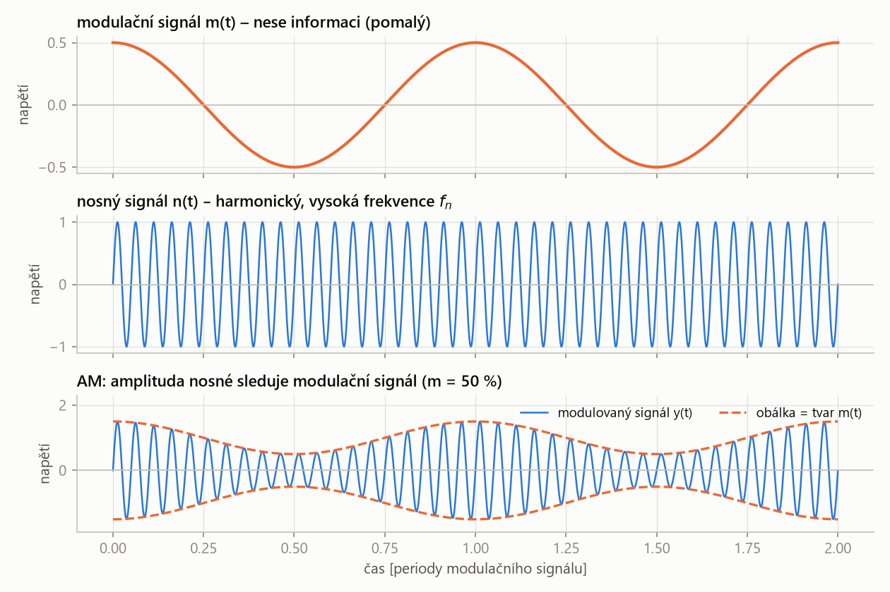
- Frekvence nosné se nemění – kmity jsou pořád stejně husté. Mění se jen jejich výška.
- Obálka (čárkovaně) má tvar modulačního signálu – v ní je informace.
- Bez modulace by amplituda byla stále \(A\); s modulací kolísá kolem \(A\) nahoru i dolů.
Hloubka modulace
Hloubka modulace \(m\) je poměr amplitudy modulačního signálu \(M\) k amplitudě nosného signálu \(A\), vyjádřený obvykle v procentech: \[ m = \frac{M}{A} \cdot 100\ \% \]
říká, jak moc je signál „promodulovaný“ – o kolik procent se amplituda nosné při modulaci zvětšuje a zmenšuje. Při \(m\) = 50 % kolísá mezi 0,5 A a 1,5 A.
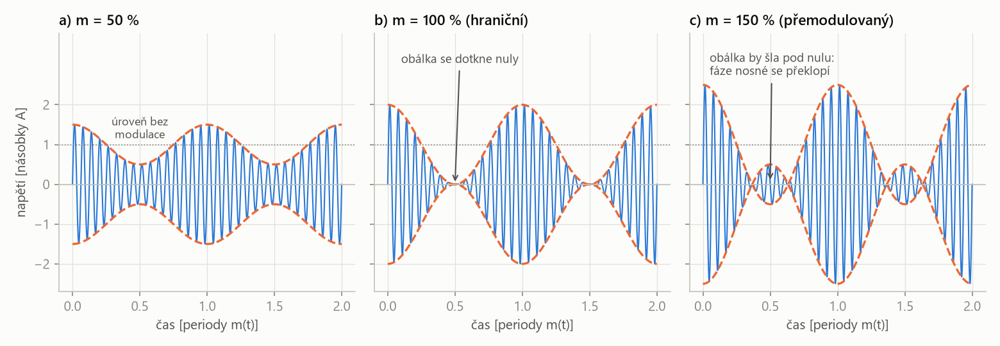
- m = 50 %: amplituda kolísá ±50 % kolem úrovně bez modulace. Obálka nikde nezmizí.
- m = 100 %: maximum je dvojnásobek úrovně bez modulace a minimum se dotkne nuly. To je hraniční stav – není vhodný, stačí malé zvětšení signálu a přejde se do přemodulování.
- m > 100 % (přemodulovaný signál): maximum je víc než dvojnásobek a obálka by měla jít pod nulu. To nejde – místo toho se nosná překlopí o 180° (carrier exhibits phase reversal). Obálka pak už nemá tvar modulačního signálu a ten se při demodulaci zkreslí.
Obálka právě dosáhne nuly – signál ještě jde demodulovat, ale je na hranici. Při překročení 100 % vzniká přemodulování: obálka se v nule „láme“, nosná překlápí fázi a demodulovaný signál je zkreslený. V praxi se proto drží \(m\) < 100 %.
Demodulace AM
Demodulace je opačný proces k modulaci: z přijatého modulovaného signálu se s využitím znalosti nosné a použitého způsobu modulace získá zpět původní modulační signál (nebo přenášené symboly).
„sundání nákladu z nosné“. U AM stačí vzít obálku, u FM převést frekvenci na napětí, u digitálních modulací rozhodnout, který symbol přišel.
U AM je demodulace jednoduchá: usměrňovač (udělá absolutní hodnotu) a pak dolní propust – a získám modulační signál.
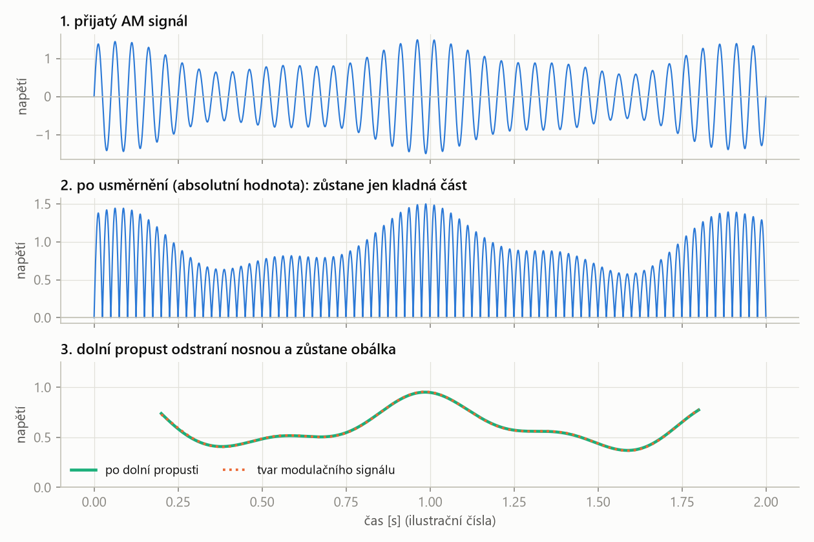
- Po usměrnění už signál není symetrický kolem nuly – jeho střední hodnota sleduje obálku.
- Dolní propust s mezní frekvencí mezi frekvencí modulačního signálu a nosné odstraní rychlé kmity nosné a nechá pomalou obálku.
- Proto se u AM drží \(m\) < 100 %: přemodulovanou obálku by takto získaný signál nekopíroval.
Nejjednodušší AM přijímač tvoří jen dioda a za ní paralelně kondenzátor a rezistor. Dioda propustí jen jednu polaritu (usměrnění), kondenzátor se nabíjí na vrcholy kmitů a rezistor ho pomalu vybíjí – takže napětí na něm sleduje obálku. Je to vlastně vrcholový detektor, který stihne sledovat pomalé změny obálky, ale ne rychlé kmity nosné. Na výstupu je zvuk.
Spektrum AM a postranní pásma
Modulovaný signál AM lze zapsat jako nosnou, jejíž amplituda kolísá kolem \(A\) podle modulačního signálu:
1. Amplituda nosné kolísá kolem \(A\) s hloubkou \(m = M/A\):
\[ y(t) = A\,\bigl[1 + m\cos(\omega_m t + \varphi)\bigr] \cdot \sin(\omega_n t) \]2. Roznásobíme a použijeme vzorec pro součin:
\[ \sin\alpha\cos\beta = \tfrac{1}{2}\bigl[\sin(\alpha + \beta) + \sin(\alpha - \beta)\bigr] \]3. Dostaneme všechny složky signálu:
\[ \begin{aligned} y(t) = {} & A \sin(\omega_n t) \\ & + \frac{A m}{2}\, \sin\bigl[(\omega_n + \omega_m)\,t + \varphi\bigr] \\ & + \frac{A m}{2}\, \sin\bigl[(\omega_n - \omega_m)\,t - \varphi\bigr] \end{aligned} \]První člen je samotná nosná, druhý horní postranní pásmo (USB, Upper Sideband), třetí dolní postranní pásmo (LSB, Lower Sideband). Rovnost obou tvarů je ověřena i numericky.
Postranní pásmo je část spektra modulovaného signálu ležící nad nosnou frekvencí (horní, USB, \(f_n + f_m\)) nebo pod ní (dolní, LSB, \(f_n - f_m\)); každé z nich nese celou informaci modulačního signálu.
modulace „posune“ spektrum modulačního signálu k nosné – frekvenční posun dvou signálů na jejich součet a rozdíl. Kolem nosné tak vzniknou dvě zrcadlové kopie.
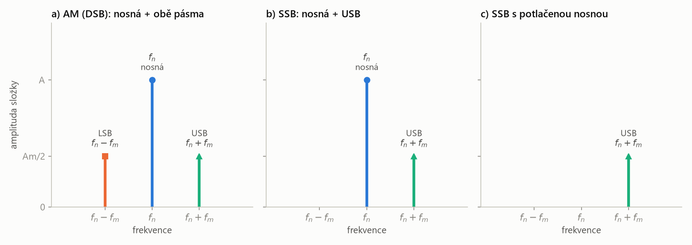
- Spektrum AM je posunuté kolem frekvence nosné a je symetrické podle \(f_n\): LSB je zrcadlo USB.
- Nosná nese hlavní energii, proto je její čára nejvyšší (\(A\) proti \(Am/2\)). Přitom žádnou informaci nenese – ta je v postranních pásmech.
- AM zabírá pásmo od \(f_n - f_m\) do \(f_n + f_m\), tedy šířku \(2 f_m\). Stačila by ale polovina – USB i LSB nesou totéž.
Výkon složky je úměrný druhé mocnině její amplitudy. Nosná má amplitudu \(A\), každé postranní pásmo \(Am/2\).
1. Podíl nosné na celkovém výkonu:
\[ \frac{P_n}{P_\text{celk}} = \frac{A^2}{A^2 + 2\left(\frac{Am}{2}\right)^2} = \frac{1}{1 + \frac{m^2}{2}} \]2. Pro \(m\) = 100 %:
\[ \frac{1}{1 + 0{,}5} = \frac{2}{3} \approx 67\ \% \]3. Pro \(m\) = 50 %:
\[ \frac{1}{1 + 0{,}125} = 0{,}889 \approx 89\ \% \]I při maximální dovolené hloubce modulace jdou dvě třetiny výkonu vysílače do nosné, která informaci nenese.
Přestože je AM konstrukčně jednoduchá, její velkou nevýhodou je značná (a zbytečná) šířka spektra, kterou zabírá. Energie se přenáší v podobě obou pásem (Double Sideband, DSB) a nosné vlny. Řešením je potlačit jedno postranní pásmo (DSB → SSB) a potlačit nosnou frekvenci. Tak vznikají deriváty AM.
AM: amplituda nosné sleduje modulační signál, \(m = M/A\) má být pod 100 %. Demodulace = usměrnění + dolní propust. Spektrum = nosná + USB + LSB (zrcadla), šířka \(2 f_m\); nosná nese většinu výkonu, ale žádnou informaci.
Co je „derivát“ modulace a k čemu je
Derivát modulace je odvozená varianta základní modulace (AM, FM, PM), která základní princip zachovává, ale upravuje ho – vynechá část signálu, omezí modulační signál na několik diskrétních stavů nebo kombinuje více modulovaných parametrů najednou.
„vylepšená verze“ AM nebo PM. Slovo derivát tu nemá nic společného s derivací – znamená „odvozený od“. Vždy řeší nějakou slabinu základní modulace.
Každá základní modulace má slabinu a derivát ji obchází:
- AM plýtvá pásmem a výkonem → SSB vynechá jedno postranní pásmo, SSB s potlačenou nosnou i nosnou.
- PM má složitý demodulátor a spojitou fázi je těžké přesně rozlišit → PSK (BPSK) používá jen několik pevných fází.
- Jedna modulace nese málo stavů → QAM (derivát AM i PM) může měnit amplitudu a zároveň fázi. Tím vznikne víc stavů, např. 00, 01, 10, 11 – 4 stavy = 2 bity najednou.
| derivát | odvozen od | co mění oproti základní modulaci | k čemu |
|---|---|---|---|
| SSB | AM | vynechá jedno postranní pásmo (LSB) | poloviční šířka pásma |
| SSB s potlačenou nosnou | AM | vynechá LSB i nosnou | poloviční pásmo, žádný výkon do nosné |
| PSK, BPSK | PM | jen diskrétní fáze (např. 0° a 180°) | jednoduchá detekce, přenos bitů |
| QAM | AM a PM | mění amplitudu i fázi najednou | víc bitů v jednom taktu |
Derivát AM: Single Sideband (SSB)
SSB (jednopásmová modulace) je derivát AM, ve kterém se z modulovaného signálu odstraní jedno postranní pásmo; přenáší se jen nosná a jedno postranní pásmo (obvykle horní, USB). Ve variantě s potlačenou nosnou se odstraní i nosná a přenáší se pouze jedno postranní pásmo.
protože USB a LSB nesou totéž, stačí poslat jen jedno. Ušetří se polovina pásma, a když se vynechá i nosná, ušetří se i výkon, který by nesl „prázdnou“ nosnou.
Ze všech složek AM se škrtne poslední člen (LSB):
\[ y(t) = A \sin(\omega_n t) + \frac{A m}{2}\, \sin\bigl[(\omega_n + \omega_m)\,t + \varphi\bigr] \]Zůstává Upper Sideband a nosná (obr. P10.4 b). Šířka pásma klesne z \(2 f_m\) na \(f_m\).
Derivát AM: SSB s potlačenou nosnou
Škrtne se i nosná:
\[ y(t) = \frac{A m}{2}\, \sin\bigl[(\omega_n + \omega_m)\,t + \varphi\bigr] \]Zůstává pouze Upper Sideband (obr. P10.4 c) – celý výkon vysílače jde do složky, která nese informaci.
Ano – přenos je úspornější, ale demodulace složitější.
- Bez nosné už obálka signálu nemá tvar modulačního signálu, takže jednoduchý detektor obálky (dioda + RC, krystalka) nefunguje.
- Přijímač si musí nosnou vyrobit sám vlastním oscilátorem a signál s ní vynásobit (tzv. synchronní neboli koherentní demodulace). Vynásobením se USB posune zpět na \(f_m\) a dolní propust odstraní zbytek.
- Vyrobená nosná musí mít přesně frekvenci \(f_n\). Když je mimo, všechny frekvence demodulovaného signálu se posunou o tuto chybu a řeč zní zkresleně („kačeří hlas“).
Platí tedy obecné pravidlo přenosové cesty: demodulátor potřebuje známou nosnou vlnu. U klasické AM ji dostane zadarmo v signálu, u SSB s potlačenou nosnou ji musí obnovit sám.
Hovorový signál má složky do \(f_m = 3{,}4\ \text{kHz}\).
\[ \begin{aligned} \text{AM (DSB)}:&\quad B = 2 f_m = 6{,}8\ \text{kHz} \\ \text{SSB}:&\quad B = f_m = 3{,}4\ \text{kHz} \end{aligned} \]Do stejného úseku spektra se tak se SSB vejde dvakrát víc kanálů (srovnej s FDM).
Derivát = odvozená varianta základní modulace, která řeší její slabinu. SSB nechá jen USB (+ nosnou) → poloviční pásmo; SSB s potlačenou nosnou nechá jen USB → i úspora výkonu, ale přijímač si musí nosnou obnovit sám.
Přenosová cesta: vysílač – přijímač
Modulace je jen jeden článek. Celá cesta od zdroje dat k výstupu má tyto bloky:
Schéma: přenosová cesta podle tří slidů „Přenosová cesta: vysílač – přijímač“. Nahoře vysílací strana, dole přijímací (čte se zprava doleva), mezi nimi kanál.
- Zdroj dat – signál (např. biosignál po A/D převodu).
- Kódování zdroje – komprese, aby se posílalo co nejméně bitů (PCM, MPEG, Huffmanovo kódování).
- Kódování kanálu – přidání redundantních (nadbytečných) prvků, aby šly chyby odhalit a opravit.
- Modulátor – převede data na analogový signál pro přenos kanálem; nosnou mu dodává oscilátor.
- Vysílač – zesílení a přizpůsobení signálu pro formu přenosu (anténa, optika…).
- Přenosový kanál – médium přenosu („vzduch“, elektrický kabel, optické vlákno); jeho parametry jsou šum, útlum a rušení.
- Přijímač – „zachytí“ signál, provede základní zesílení a filtraci.
- Demodulátor – s použitím známé nosné vlny a algoritmu modulace provede demodulaci: rekonstrukci symbolů, fázovou nebo frekvenční detekci.
- Dekodér – odstraní redundantní bity a ověří správnost původní informace.
Kódování zdroje je převod dat ze zdroje do co nejúspornějšího tvaru (komprese) odstraněním nadbytečné informace před přenosem.
„zmenši, co se dá“ – např. MPEG u videa nebo Huffmanův kód, který častým znakům dá krátké kódy.
Kódování kanálu je přidání řízené redundance (kontrolních bitů) k datům, které přijímači umožní odhalit a opravit chyby vzniklé v přenosovém kanále.
opak komprese: schválně přidám pár bitů navíc, aby se poznalo, že šum nějaký bit převrátil. Dekodér je pak zase odstraní.
- Zesilovač AM (slide se dvěma tranzistory MOSFET): nosná 1 MHz střídavě spíná tranzistory koncového stupně, a napájecí napětí tohoto stupně se mění v rytmu zvuku (1 kHz) přes transformátor. Výška výstupních kmitů tak sleduje zvuk; laděný obvod LC z nich udělá sinusovku a anténa ji vyzáří.
- Vysílač AM (slide s mikrofonem): mikrofon → tranzistorový zesilovač → oscilátor s rezonančním obvodem LC, který určuje frekvenci nosné (laděním kondenzátoru se mění) → anténa.
- Krystalka: dioda + RC = detektor obálky (viz demodulace AM).
- AM přijímač s audio zesilovačem: anténa → laděný obvod LC vybere stanici (jen její nosnou) → tranzistor provede detekci (demodulaci) → audio zesilovač (LM386) → reproduktor nebo sluchátka.
Zdroj → kódování zdroje (komprese) → kódování kanálu (redundance) → modulátor + oscilátor → vysílač → kanál (šum, útlum, rušení) → přijímač → demodulátor + známá nosná → dekodér → výstup.
Frekvenční modulace (FM)
Frekvenční modulace je modulace, při které modulační signál ovlivňuje přímo frekvenci nosné vlny; amplituda nosné vlny je konstantní.
kladná hodnota modulačního signálu nosnou „zrychlí“ (kmity se zhustí), záporná „zpomalí“. Informace je v hustotě kmitů, ne v jejich výšce.
| \(f(t)\) | okamžitá frekvence modulovaného signálu |
| \(f_n\) | frekvence nosné (bez modulace) |
| \(\Delta f\) | kmitočtový zdvih – největší odchylka frekvence od \(f_n\) |
| \(m(t)/M\) | modulační signál normovaný na rozsah −1 až +1 |
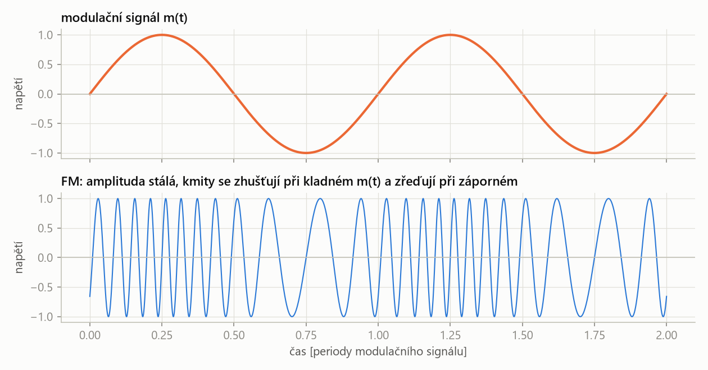
- Amplituda FM signálu je pořád stejná – obálka nenese nic.
- Kde je modulační signál kladný, jsou kmity hustší (vyšší frekvence), kde je záporný, řidší.
Díky změnám v kmitočtu vzniká ve spektru FM i při jediném modulačním tónu mnoho postranních složek, které se rozšiřují na obě strany od nosné. Ve skutečnosti se rozšiřují do nekonečna, ale jejich intenzita klesá.
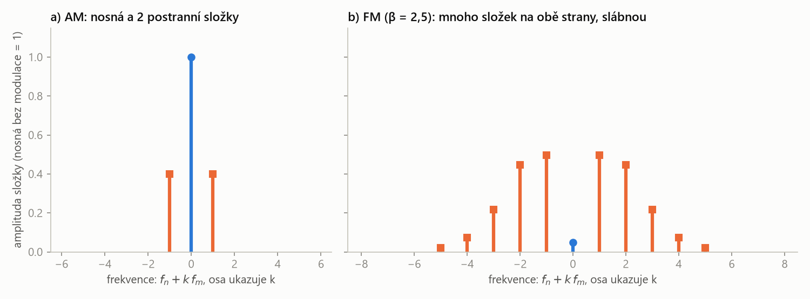
- AM má na každé straně jednu složku, FM mnoho (ve vzdálenostech \(f_m, 2f_m, 3f_m…\)), které slábnou.
- FM proto zabírá širší pásmo než AM – za odolnost proti šumu se platí šířkou pásma.
- Výkon FM signálu je stálý; modulace ho jen přerozdělí mezi nosnou a postranní složky (nosná může i téměř zmizet).
Demodulátorem FM je převodník frekvence na napětí – jeho výstupní napětí představuje původní signál. Demodulátor musí stejně jako u AM pracovat na stejné frekvenci, jakou měla nosná vlna.
- FM je vysoce odolná proti šumu: šum a rušení mění hlavně amplitudu signálu, a ta u FM informaci nenese – nemá přímý vliv na modulační signál (na rozdíl od AM).
- Odolnost proti interferenci signálu.
- Ve srovnání s AM postačuje nižší výkon vysílače.
- Díky tomu je FM široce používaná v rádiových spojích včetně obousměrné rádiové komunikace.
FM: modulační signál mění frekvenci nosné, amplituda je stálá. Spektrum má mnoho postranních složek (široké pásmo). Demodulace převodníkem f/U. Výhoda: odolnost proti šumu a rušení, nižší výkon.
Fázová modulace (PM) a PSK
Fázová modulace je modulace, při které modulační signál mění fázi \(\varphi\) nosného signálu \(n(t) = A \sin(\omega_n t + \varphi)\), zatímco amplituda zůstává stálá.
průběh nosné se posouvá dopředu a dozadu v čase podle modulačního signálu. Na pohled je PM podobná FM – posun fáze krátce změní i hustotu kmitů.
Spojitá PM není příliš využívaná:
- má velmi složitý demodulátor,
- je pracné (a způsobuje chybovost) rozlišit např. \(\varphi = 0°\) od \(\varphi = 180°\) – přijímač musí přesně vědět, kde je „nulová“ fáze.
Používá se proto jen derivát PM: PSK (Phase Shift Keying, klíčování fázovým posuvem) s diskrétním modulačním signálem, u kterého není složité detekovat fázor – fáze může nabývat jen několika předem daných hodnot.
PSK (klíčování fázovým posuvem) je derivát fázové modulace s diskrétním (digitálním) modulačním signálem: každému symbolu odpovídá jedna z konečného počtu předem daných fází nosné.
místo plynulého „kroucení“ fáze se fáze přepíná mezi několika pevnými polohami. Přijímač nemusí měřit fázi přesně, stačí rozhodnout, ke které poloze má nejblíž.
Kódování binární informace pomocí AM, FM a PM
Bit (binary digit) je základní jednotka informace, která může nabývat jedné ze dvou hodnot, 0 nebo 1; \(n\) bitů dává \(2^n\) různých kombinací.
odpověď ano/ne. Dva bity rozliší 4 stavy (00, 01, 10, 11), tři bity 8 stavů, čtyři bity 16.
Při digitálním přenosu se mění parametr nosné vždy na celou dobu bitu:
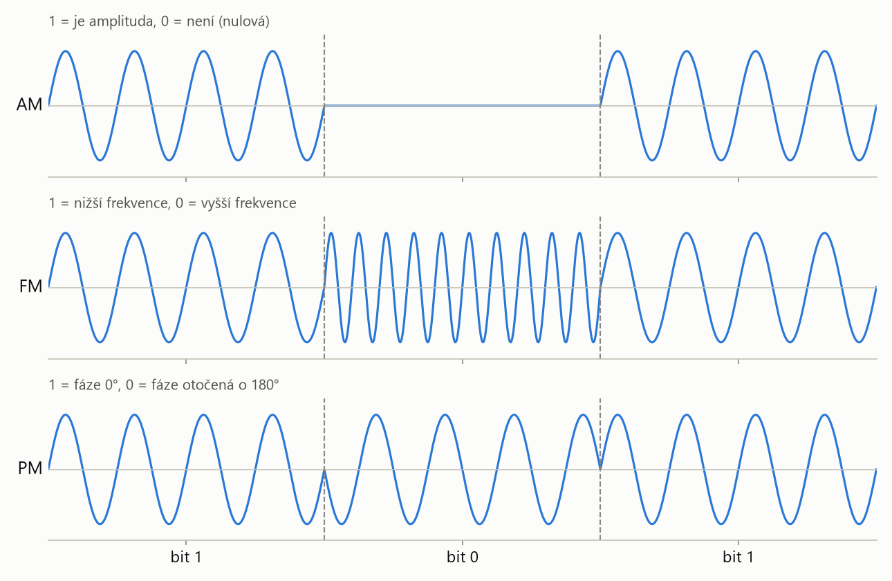
- V amplitudě: je, nebo není amplituda (1 = nosná vysílá, 0 = nevysílá).
- Ve frekvenci: dvě frekvence, jedna pro 1 a druhá pro 0.
- Ve fázi: frekvence i amplituda stálé, informace je v poloze průběhu. Když se fáze na hranici bitů otočí o 180°, změnil se bit – každý zlom průběhu je změna bitu.
Přenosová rychlost \(R\) je počet bitů přenesených za sekundu [bit/s]; doba trvání jednoho bitu je její převrácená hodnota: \[ T_b = \frac{1}{R} \]
„takt“ přenosu. Vysílač i přijímač se na něm musí dohodnout předem, jinak přijímač neví, kde jeden bit končí a další začíná.
Ze samotného průběhu to nepoznám – dvě nuly za sebou vypadají jako jedna dlouhá. Potřebuju znát přenosovou rychlost. Při 1 kbit/s trvá bit 1 ms; trvá-li „nula“ 2 ms, byly to dvě nuly.
V praxi navíc přijímač musí být s vysílačem synchronizovaný – jeho hodiny musí tikat ve stejném rytmu a ve stejné fázi. Hodiny se dolaďují podle hran mezi bity; proto se dlouhé řady stejných bitů v kódování kanálu „rozbíjejí“, aby měl přijímač podle čeho se srovnat.
BPSK – dvoustavová modulace
BPSK (Binary Phase Shift Keying) je dvoustavová fázová modulace: modulátor kóduje postupně vždy jeden bit otočením fáze nosné, takže nosná má jen dvě možné fáze (0° a 180°).
jeden takt = jeden bit. Bit 1 pošle nosnou „normálně“, bit 0 obrácenou (vynásobenou −1).
Konstelační diagram je zobrazení všech možných symbolů digitální modulace jako bodů v rovině, kde vodorovná osa (I) a svislá osa (Q) udávají amplitudy dvou navzájem kolmých složek nosné; vzdálenost bodu od počátku odpovídá amplitudě a jeho úhel fázi.
„mapa symbolů“. Každý bod je jeden stav, který vysílač umí poslat. Čím víc bodů, tím víc bitů v jednom taktu – ale tím blíž jsou u sebe.
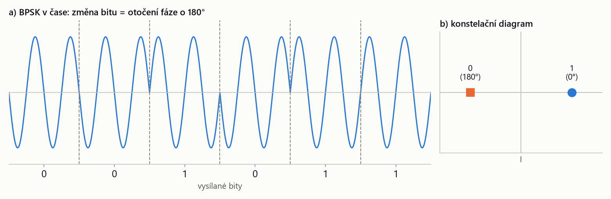
- Konstelační diagram BPSK má jen dvě polohy – stavovou hodnotu 0 nebo 1. Leží proti sobě (stejná amplituda, fáze 0° a 180°).
- Body jsou od sebe co nejdál, proto je BPSK velmi odolná vůči šumu; nese ale jen 1 bit na takt.
- Když se bit nezmění (0 → 0), fáze se nezmění a průběh pokračuje plynule.
Bit = 0/1, \(n\) bitů = \(2^n\) stavů. Binárně: AM = je/není amplituda, FM = dvě frekvence, PM = otočení fáze. Přijímač musí znát přenosovou rychlost. BPSK: 1 bit na takt, dva body v konstelačním diagramu.
QAM – derivát AM a PM
QAM (Quadrature Amplitude Modulation) je modulace, která využívá amplitudovou i fázovou složku signálu: používá dvě nosné stejné frekvence posunuté o 90° (sin a cos), každou z nich amplitudově moduluje vlastním signálem a obě sečte.
dvě AM najednou na „kolmých“ nosných. Výsledek má podle kombinace jinou amplitudu i jinou fázi, takže jeden takt nese víc bitů. Dnes se využívá prakticky všude.
Složka I (in-phase, „ve fázi“) je část QAM signálu nesená nosnou \(\sin(\omega_n t)\), složka Q (quadrature, „kvadratura“) část nesená nosnou posunutou o 90°, \(\cos(\omega_n t)\); protože jsou nosné vůči sobě posunuté o 90°, jsou ve vzájemné kvadratuře a přijímač je dokáže od sebe oddělit.
I a Q jsou dvě nezávislé „kolejnice“ na jedné frekvenci. V konstelačním diagramu jsou to vodorovná a svislá osa.
Schéma: modulátor QAM „víc zblízka“ podle slidu – pro 2 bity na takt (QPSK). U QAM16 jde do každé větve dvojice bitů, která vybere jednu ze 4 možných amplitud.
Součet lze zapsat jako jedinou sinusovku s amplitudou a fází:
\[ s(t) = \sqrt{I^2 + Q^2} \cdot \sin(\omega_n t + \varphi) \]kde fáze \(\varphi\) je úhel bodu \([I, Q]\) od osy I.
| \(I\) | amplituda složky ve fázi (souřadnice na vodorovné ose konstelace) |
| \(Q\) | amplituda kvadraturní složky (souřadnice na svislé ose) |
| \(\omega_n\) | úhlová frekvence nosné (stejná pro obě složky) |
| \(\sqrt{I^2 + Q^2}\) | amplituda výsledného signálu = vzdálenost bodu od počátku |
| \(\varphi\) | fáze výsledného signálu = úhel bodu |
Bit pro větev I je 0 → \(A = -1\), bit pro větev Q je 1 → \(A = +1\).
1. Složky:
\[ s(t) = -1 \cdot \sin(\omega_n t) + 1 \cdot \cos(\omega_n t) \]2. Amplituda:
\[ \sqrt{(-1)^2 + 1^2} = \sqrt{2} \approx 1{,}41 \]3. Fáze (bod \([-1, +1]\) leží ve 2. kvadrantu):
\[ \varphi = 135° \]Výsledek: \(s(t) = \sqrt{2}\,\sin(\omega_n t + 135°)\). Ostatní tři dvojice bitů dají stejnou amplitudu \(\sqrt 2\) a fáze 45°, −45° a −135° – QPSK je tedy čtyřstavová fázová modulace.
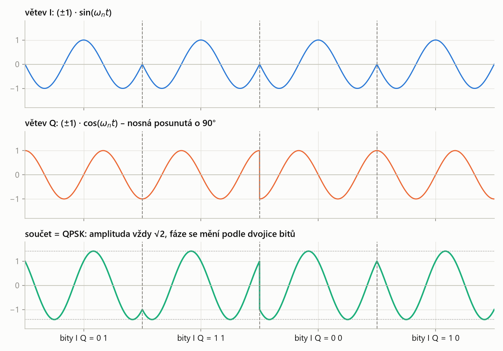
- Každá větev je obyčejná dvoustavová modulace (±1 krát nosná). Teprve součet dává čtyři různé stavy.
- Výsledná amplituda je u QPSK pořád stejná, mění se jen fáze – podle dvojice bitů.
- Jeden takt nese 2 bity: při stejném počtu taktů za sekundu dvojnásobná rychlost proti BPSK.
QAM16 a vyšší
Když každá větev nedostane jen 2 úrovně (±1), ale 4 (−3, −1, +1, +3), vznikne mřížka 4 × 4 = 16 bodů – QAM16. Na slidu jde do větve I dvojice bitů „1 0“ a do větve Q dvojice „1 1“; každá dvojice vybere jednu ze 4 možných hodnot amplitudy.
| \(b\) | počet bitů v jednom taktu (na jeden symbol) |
| \(M\) | počet bodů (stavů) konstelačního diagramu |
BPSK: \(M = 2 → 1\) bit; QPSK: \(4 → 2\); QAM16: \(16 → 4\); QAM64: \(64 → 6\); QAM256: \(256 → 8\) (celý bajt); QAM1024: \(1024 → 10\).
Symbol je jeden stav modulovaného signálu (jeden bod konstelačního diagramu) vysílaný po dobu jednoho taktu; nese \(\log_2 M\) bitů, kde \(M\) je počet možných symbolů.
„písmeno“ abecedy, kterou si vysílač a přijímač domluvili. U QAM16 má abeceda 16 písmen, každé znamená 4 bity.
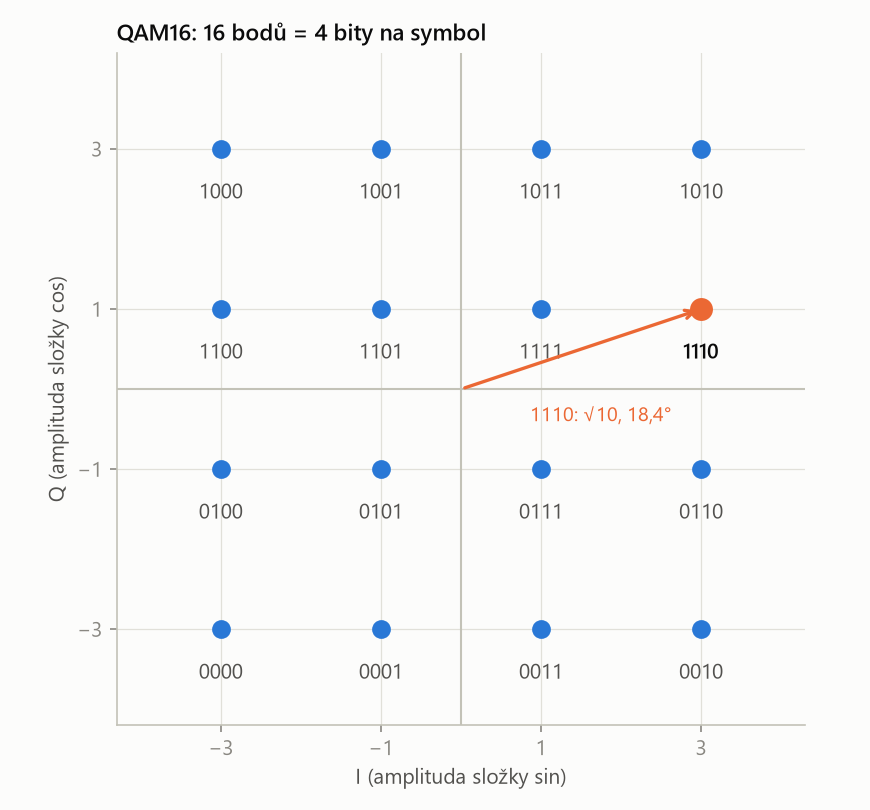
- Každá kombinace QAM16 definuje 4 bity: první dva určují řádek (úroveň Q), druhé dva sloupec (úroveň I).
- Body mají různou vzdálenost od počátku (3 různé amplitudy) i různý úhel (fázi) – QAM opravdu mění amplitudu i fázi.
- Sousední body se liší vždy jen v jednom bitu (Grayův kód). Když šum posune symbol k sousedovi, pokazí se jen jeden bit ze čtyř.
Podle konstelace: \(I = +3\), \(Q = +1\).
1. Amplituda:
\[ \sqrt{3^2 + 1^2} = \sqrt{10} \approx 3{,}16 \]2. Fáze (úhel bodu od osy I):
\[ \varphi = \arctan\frac{1}{3} \approx 18{,}4° \]Symbol 1110 se tedy vysílá jako \(3{,}16\,\sin(\omega_n t + 18{,}4°)\) po dobu jednoho taktu.
Modulace QAM a odolnost vůči šumu
Každý bod konstelace představuje ideální pozici symbolu. Přijatý symbol je ale kvůli šumu kanálu posunutý. Odolnost vůči šumu je dána oblastí, ve které je daná pozice ještě vyhodnocena jako správný symbol – přijímač vybere nejbližší ideální bod.
SNR (Signal-to-Noise Ratio) je poměr výkonu užitečného signálu k výkonu šumu, obvykle v decibelech: \[ \text{SNR} = 10 \log \frac{P_\text{signál}}{P_\text{šum}}\ \ [\text{dB}] \]
jak moc je signál „nad“ šumem. Čím vyšší SNR, tím menší mračna kolem bodů konstelace a tím víc bodů se do ní dá natěsnat.
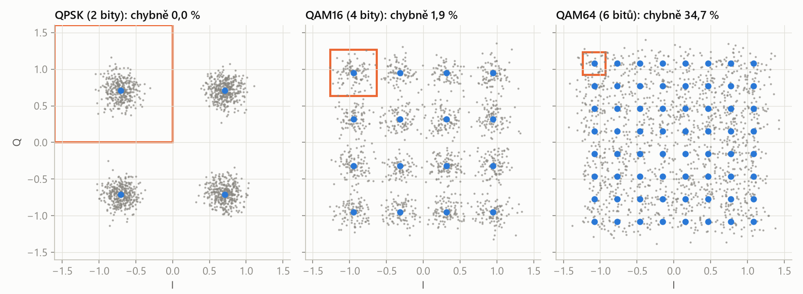
- QPSK: oblast správného vyhodnocení je celý kvadrant – šum by musel symbol posunout přes osu. Chyb 0 %.
- QAM16: body jsou blíže k sobě, a proto jsou náchylnější k šumu a chybám v přenosu dat – 1,9 % chybných symbolů.
- QAM64: oblasti jsou malé, mračna se překrývají – 34,7 % chybných symbolů. Vyšší modulační schémata umožňují vyšší datový tok, ale vyžadují výrazně lepší SNR v přenosovém kanálu.
Při stejném výkonu vysílače se víc bodů musí vejít do stejné plochy, takže jsou blíž k sobě. Přidat bity na symbol jde jen tehdy, když je kanál dost čistý. Proto se systémy (Wi-Fi, LTE) přizpůsobují: při dobrém signálu jedou QAM256 nebo QAM1024, při slabém přejdou na QAM16, QPSK nebo BPSK.
Rušička (jammer) vysílá ve stejném pásmu jako napadený systém silný šum nebo jiný signál. U přijímače tím klesne SNR: mračna kolem bodů konstelace se zvětší tak, že přesahují rozhodovací oblasti (jako u QAM64 na obr. P10.11), a symboly se vyhodnocují špatně. Systém nejdřív přejde na odolnější modulaci (méně bodů), a když ani to nestačí, spojení se rozpadne. Obranou je větší výkon, směrové antény, nebo skákání po frekvencích (viz Bluetooth níže) – rušička pak musí zarušit celé pásmo najednou. Úmyslné rušení je mimo vojenské a speciální účely zakázané.
Formy QAM
- Analogová QAM se používá k přenosu více analogových signálů na jedné nosné: v televizních systémech PAL a NTSC přenáší barevnou informaci obrazu; v AM rádiu systém C-QUAM přenáší dva kanály (stereo) na jedné nosné.
- Digitální (kvantovaná) QAM se používá pro datovou komunikaci v radiokomunikačních systémech: celulární technologie, LTE, WiMAX, Wi-Fi 802.11…
Kabelem vede mnoho televizních kanálů najednou, každý na jiné nosné frekvenci vedle sebe – je to frekvenční multiplex. Digitální kabelová televize (DVB-C) moduluje každý kanál pomocí QAM (typicky 64-QAM nebo 256-QAM). QAM samostatnou nosnou vlnu nevysílá – kdyby byly \(I = Q = 0\), nevyšlo by nic. Všechna informace je v postranních pásmech kolem nosné frekvence a přijímač si nosnou dopočítá sám. Kabel je stíněný a čistý (vysoké SNR), proto si může dovolit hustou konstelaci.
Pro zajímavost: jak fungují Wi-Fi a Bluetooth
- Pracuje v pásmech 2,4 GHz a 5 GHz (nově i 6 GHz) a pásmo dělí na kanály široké 20 až 160 MHz.
- Kanál se nepoužije jako jedna nosná, ale rozdělí se na stovky úzkých podnosných těsně vedle sebe (OFDM – je to vlastně frekvenční multiplex). Na každé podnosné běží vlastní QAM.
- Modulace se mění podle kvality signálu: od BPSK a QPSK (daleko od routeru) po 256-QAM (Wi-Fi 5) a 1024-QAM (Wi-Fi 6). Proto rychlost klesá se vzdáleností – přesně podle obr. P10.11.
- Zařízení se o kanál dělí časově: než vysílají, poslouchají, jestli je volno.
- Pracuje v pásmu 2,4 GHz s malým výkonem, typický dosah je kolem 10 m.
- Pásmo je rozdělené na úzké kanály (klasický Bluetooth 79 kanálů po 1 MHz, Bluetooth Low Energy 40 kanálů po 2 MHz) a spojení skáče po kanálech (frequency hopping) – u klasického až 1600× za sekundu podle dohodnutého pořadí. Rušení na jednom kanálu tak zkazí jen malou část dat.
- Základní modulace je GFSK – frekvenční klíčování (FM s dvěma frekvencemi pro 0 a 1, jako na obr. P10.7) s vyhlazenými přechody. Rychlejší režimy používají fázové modulace (varianty QPSK a 8-PSK).
QAM = dvě nosné posunuté o 90° (I = sin, Q = cos), každá amplitudově modulovaná, sečtené → mění se amplituda i fáze. \(M\) bodů = \(\log_2 M\) bitů na takt. Víc bodů = vyšší datový tok, ale body blíž k sobě → potřeba vyššího SNR.
„QAM je derivát AM a PM: můžu šahat na amplitudu a zároveň na fázi, takže můžu kódovat víc stavů – např. 00, 01, 10, 11, tedy 4 stavy = 2 bity. Používá dvě nosné posunuté o 90°, sin a cos, které jsou ve vzájemné kvadratuře; jedna je složka I, druhá Q, každá se amplitudově moduluje a sečtou se. V konstelačním diagramu je každý bod jeden symbol; QAM16 nese 4 bity, QAM64 6 bitů, QAM256 celý bajt. Čím víc bodů, tím blíž jsou u sebe a tím víc je přenos náchylný k šumu, takže vyšší QAM potřebuje lepší SNR. Dnes se využívá všude – LTE, Wi-Fi, kabelová televize.“
Shrnutí
Bezdrátový přenos využívá elektromagnetické vlny; vlnová délka je \(\lambda = c/f\) a pro data se používají rádiové vlny a mikrovlny, opticky IR a viditelné světlo. Modulace je nelineární proces, při kterém modulační signál (informace) mění amplitudu, frekvenci nebo fázi nosného signálu (energie, vysoká frekvence, dá se vyzářit). Podle toho rozlišujeme AM, FM a PM.
U AM sleduje amplituda nosné modulační signál; hloubka modulace \(m = M/A\) má být pod 100 % – při 100 % se obálka dotkne nuly, nad 100 % je signál přemodulovaný a nosná překlápí fázi. Demodulace je usměrnění a dolní propust (krystalka). Spektrum AM tvoří nosná a dvě zrcadlová postranní pásma (USB, LSB) – zabírá šířku \(2 f_m\) a většinu výkonu spotřebuje nosná bez informace. Deriváty jsou odvozené varianty, které řeší slabiny základní modulace: SSB vynechá LSB (poloviční pásmo), SSB s potlačenou nosnou i nosnou.
Přenosová cesta: zdroj → kódování zdroje (komprese) → kódování kanálu (redundance) → modulátor s oscilátorem → vysílač → kanál (šum, útlum, rušení) → přijímač → demodulátor se známou nosnou → dekodér → výstup. FM mění frekvenci při stálé amplitudě, má mnoho postranních složek, demoduluje se převodníkem f/U a je odolná proti šumu. PM mění fázi, ale má složitý demodulátor, proto se používá jen derivát PSK s diskrétními fázemi.
Binární informaci lze kódovat amplitudou (je/není), frekvencí (dvě frekvence) i fází (otočení); přijímač musí znát přenosovou rychlost. BPSK nese 1 bit na takt, konstelační diagram má 2 body. QAM (derivát AM a PM) moduluje dvě nosné posunuté o 90° (I a Q), takže mění amplitudu i fázi: QPSK 2 bity, QAM16 4 bity, QAM64 6 bitů. Víc bodů znamená vyšší datový tok, ale body jsou blíž k sobě a přenos potřebuje vyšší SNR.
Take-home messages
- Modulace: informace (modulační signál) mění amplitudu, frekvenci nebo fázi nosné; nosná nese energii a musí ji znát i přijímač.
- AM: obálka = modulační signál; \(m = M/A\) pod 100 %, jinak přemodulování.
- Demodulace AM = usměrňovač + dolní propust.
- Spektrum AM = nosná + USB + LSB, šířka \(2 f_m\); nosná nese většinu výkonu, ale žádnou informaci.
- Derivát = odvozená varianta modulace: SSB, SSB s potlačenou nosnou (z AM), PSK (z PM), QAM (z AM a PM).
- FM: stálá amplituda, odolná proti šumu, širší pásmo; demodulace převodníkem f/U.
- Binárně: AM je/není, FM dvě frekvence, PM otočení fáze; nutná známá přenosová rychlost.
- QAM: I (sin) a Q (cos), \(\log_2 M\) bitů na symbol; víc bodů = víc bitů, ale potřeba lepšího SNR.
Otázky ke zkoušce
Co je modulace? Popište nosný, modulační a modulovaný signál a vysvětlete, proč se signál moduluje.
Modulace je nelineární proces, který mění charakter nosného signálu pomocí modulačního signálu.
- Modulační signál nese informaci (zvuk, biosignál, data) a je pomalý.
- Nosný signál je harmonický signál vysoké frekvence, který ponese energii. Přijímač musí znát jeho parametry, aby mohl demodulovat; v rádiu je to frekvence stanice.
- Modulovaný signál je nosná, jejíž amplituda, frekvence nebo fáze se mění podle modulačního signálu.
Modulujeme, protože pomalý signál nejde vyzářit: anténa musí mít rozměr srovnatelný s vlnovou délkou a pro 1 kHz je \(\lambda = 300\ \text{km}\). Každý vysílač má navíc svou nosnou, takže si signály v prostoru nepřekážejí.
Popište amplitudovou modulaci. Co je hloubka modulace a co se stane při m = 100 % a více?
U AM se amplituda nosné mění podle modulačního signálu; obálka má tvar modulačního signálu, frekvence nosné je stálá.
\[ y(t) = A\,\bigl[1 + m\cos(\omega_m t + \varphi)\bigr] \cdot \sin(\omega_n t) \]Hloubka modulace udává promodulovanost signálu:
\[ m = \frac{M}{A} \cdot 100\ \% \]- \(m\) < 100 %: amplituda kolísá mezi \(A(1-m)\) a \(A(1+m)\), obálka nezmizí.
- \(m\) = 100 %: maximum je dvojnásobek úrovně bez modulace a obálka se dotkne nuly – hraniční stav, není vhodný.
- \(m\) > 100 %: přemodulování – nosná překlopí fázi, obálka neodpovídá modulačnímu signálu a demodulovaný signál je zkreslený.
Demodulace AM: usměrňovač (absolutní hodnota) a dolní propust.
Jak vypadá spektrum AM signálu? Jaká je jeho nevýhoda a jak ji řeší SSB?
Rozepsáním AM signálu dostaneme tři složky:
\[ \begin{aligned} y(t) = {} & A \sin(\omega_n t) \\ & + \frac{A m}{2}\, \sin\bigl[(\omega_n + \omega_m)\,t + \varphi\bigr] \\ & + \frac{A m}{2}\, \sin\bigl[(\omega_n - \omega_m)\,t - \varphi\bigr] \end{aligned} \]Nosnou na \(f_n\) a dvě postranní pásma USB (\(f_n + f_m\)) a LSB (\(f_n - f_m\)), symetrická podle nosné. Nevýhodou je zbytečná šířka spektra \(2 f_m\) – obě pásma nesou stejnou informaci – a výkon v nosné, která informaci nenese (při \(m\) = 100 % dvě třetiny výkonu).
SSB je derivát AM: odstraní LSB a nechá USB a nosnou, šířka pásma klesne na \(f_m\). SSB s potlačenou nosnou odstraní i nosnou a přenáší jen USB, takže celý výkon jde do složky s informací.
Cenou je složitější demodulace: bez nosné nefunguje detektor obálky, přijímač si musí nosnou vyrobit sám a přesně na frekvenci \(f_n\) (synchronní demodulace).
Co znamená „derivát“ modulace? Uveďte příklady z přednášky a k čemu jsou.
Derivát je odvozená varianta základní modulace (s derivací nemá nic společného). Zachovává princip, ale upravuje ho tak, aby odstranil slabinu základní modulace:
- SSB (z AM) – jen jedno postranní pásmo → poloviční šířka pásma;
- SSB s potlačenou nosnou (z AM) – jen USB → i úspora výkonu;
- PSK, BPSK (z PM) – jen několik diskrétních fází → jednoduchá detekce, přenos bitů;
- QAM (z AM i PM) – mění amplitudu a zároveň fázi → víc stavů, např. 4 stavy = 2 bity, 16 stavů = 4 bity.
Popište přenosovou cestu od vysílače k přijímači.
- Zdroj dat – signál.
- Kódování zdroje – komprese (PCM, MPEG, Huffman).
- Kódování kanálu – přidání redundance pro odhalení a opravu chyb.
- Modulátor s oscilátorem – převede data na analogový signál na nosné.
- Vysílač – zesílení a přizpůsobení pro přenos (anténa, optika).
- Přenosový kanál – vzduch, kabel, optické vlákno; šum, útlum, rušení.
- Přijímač – zachytí signál, zesílí a filtruje.
- Demodulátor – se známou nosnou a algoritmem modulace rekonstruuje symboly (fázová, frekvenční detekce).
- Dekodér – odstraní redundantní bity a ověří správnost informace.
Vysvětlete princip FM. Jak vypadá její spektrum, jak se demoduluje a jaké má výhody oproti AM?
Modulační signál mění přímo frekvenci nosné, amplituda je konstantní: kladný modulační signál kmity zhustí, záporný zředí.
\[ f(t) = f_n + \Delta f \cdot \frac{m(t)}{M} \]Ve spektru vzniká i pro jediný tón mnoho postranních složek na obě strany (teoreticky do nekonečna, ale slábnou), takže FM zabírá širší pásmo než AM. Demodulátorem je převodník frekvence na napětí, který pracuje na frekvenci nosné.
Výhody: odolnost proti šumu (šum mění amplitudu, která u FM informaci nenese), odolnost proti interferenci a nižší potřebný výkon vysílače.
Proč se spojitá PM téměř nepoužívá? Jak lze binární informaci zakódovat pomocí AM, FM a PM?
PM mění fázi nosné, ale má velmi složitý demodulátor a je pracné (a chybové) rozlišit např. 0° od 180°. Používá se proto jen derivát PSK s diskrétním modulačním signálem, u kterého je snadné detekovat fázor.
Binární informace:
- AM – je, nebo není amplituda;
- FM – dvě frekvence pro 0 a 1;
- PM – otočení fáze o 180°; změna fáze = změna bitu (BPSK).
Přijímač musí znát přenosovou rychlost (dobu bitu), jinak nepozná např. dvě nuly za sebou od jedné.
Co je QAM a konstelační diagram? Kolik bitů nese QAM16 a proč vyšší QAM potřebuje lepší SNR?
QAM je derivát AM a PM. Používá dvě nosné stejné frekvence posunuté o 90° (sin = složka I, cos = složka Q), každou amplitudově moduluje a sečte je. Výsledek má podle kombinace jinou amplitudu i fázi:
\[ s(t) = I \cdot \sin(\omega_n t) + Q \cdot \cos(\omega_n t) \]Konstelační diagram zobrazuje všechny symboly jako body v rovině I–Q; vzdálenost od počátku je amplituda, úhel je fáze. Počet bitů na symbol je \(\log_2 M\): BPSK 1, QPSK 2, QAM16 4, QAM64 6, QAM256 8.
Při stejném výkonu jsou body vyšší QAM blíž k sobě. Šum posune přijatý symbol a přijímač vybere nejbližší bod – menší rozhodovací oblast znamená víc chyb. Proto vyšší QAM dává vyšší datový tok, ale vyžaduje výrazně lepší SNR.